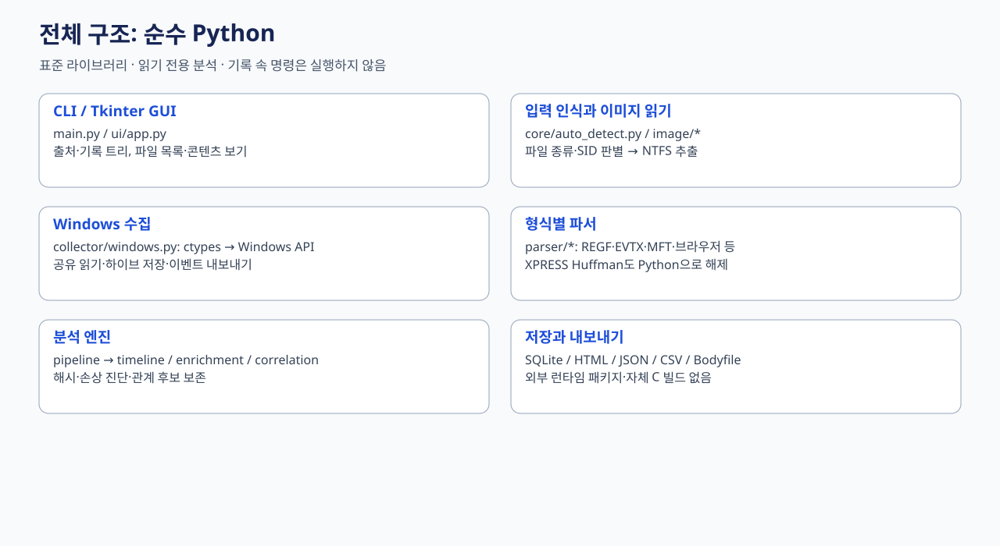
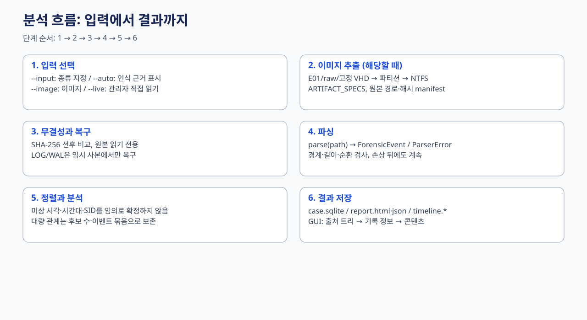
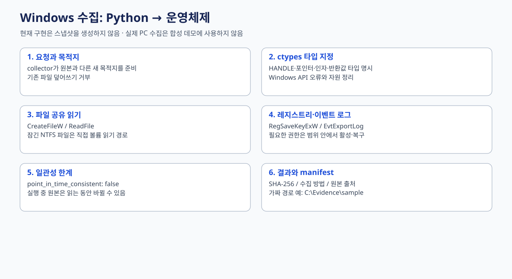
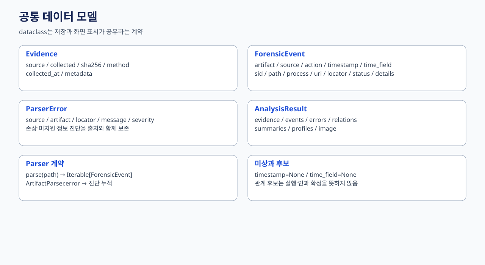
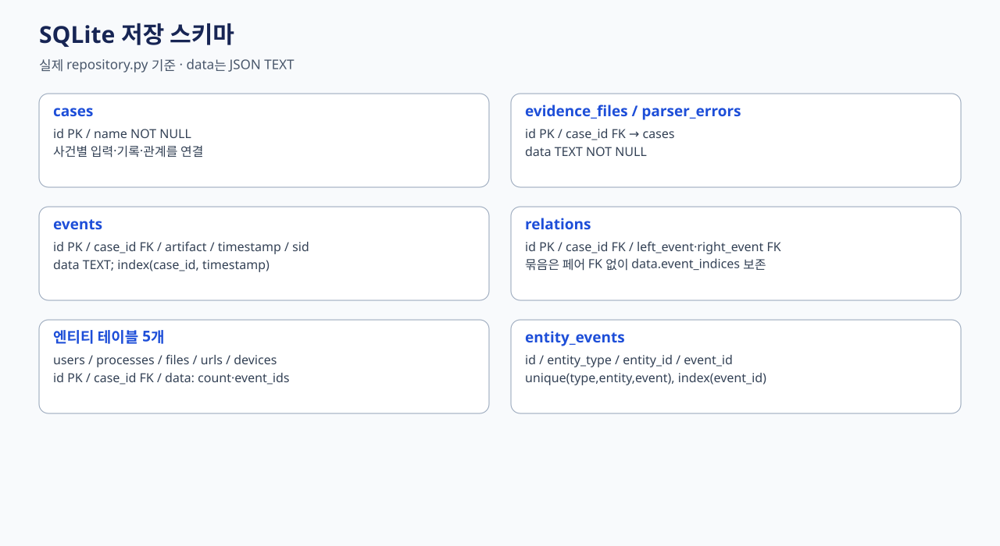
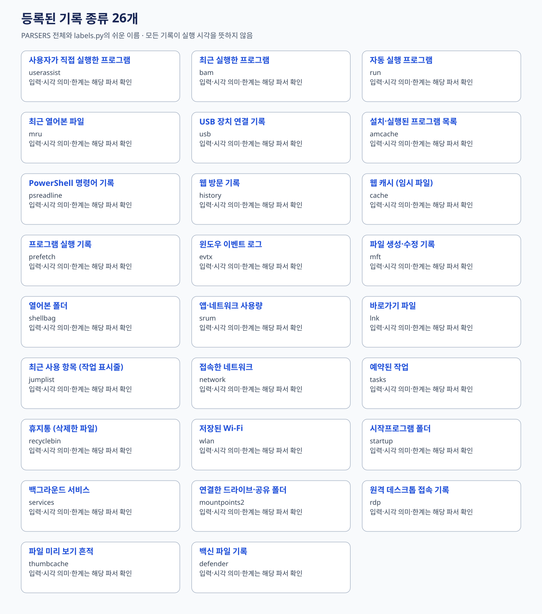
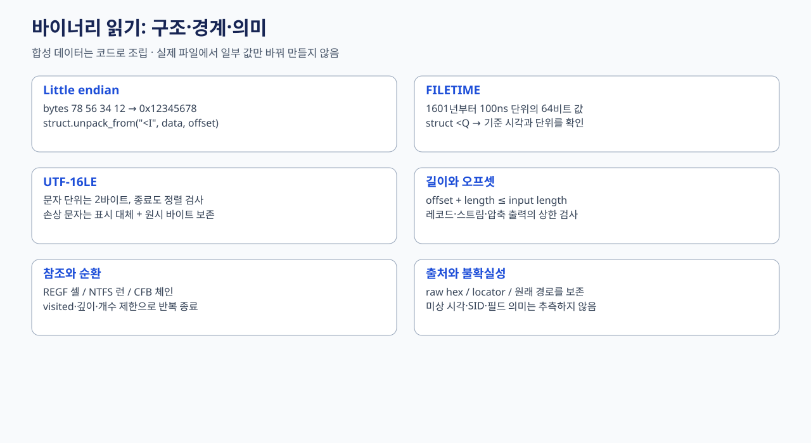

Python 표준 라이브러리로 읽기 전용 분석을 수행합니다. 수집은 ctypes Windows API와 직접 NTFS 읽기이며 스냅샷을 생성하지 않습니다. 실행 중 원본은 시점 일관성을 보장하지 않습니다.
자동 인식·이미지 추출·이 PC 직접 분석, 출처/기록 트리와 텍스트·16진수 콘텐츠 뷰어의 연결을 아래 그림으로 확인하세요. 실제 PC 수집은 이 예제에서 실행하지 않습니다.
python example/samples/demo.py는 재현 가능한 가짜 입력/출력을 만듭니다. python tools/check_annotated.py는 해설판의 코드 동일성을 검사합니다.






